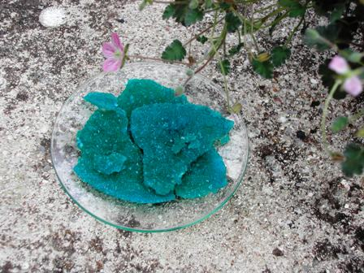

Mi è sempre piaciuto l'acido formico, per quel suo nome dal sapore alchimistico, che te lo fa immaginare come quintessenza di milioni di formiche distillate da un athanor.
E infatti ne ho già parlato al riguardo qualche tempo fa (link).
La modernità chimica imporrebbe che quest'acido si chiamasse "metanoico" (analogamente all'acetico, che diventa "etanoico"... e così via idrocarburando per ogni atomo di carbonio aggiunto), cercando di far dimenticare (agli studenti di oggi) i nomi classici sostituendoli con i nuovi nomi IUPAC, che sono tecnicamente perfetti ma di una freddezza ributttante.
Come puoi appassionarti e diventare un chimico sperimentale quando perfino il nome "politicamente corretto" (!) di un banale sale inorganico ti fa passar la voglia di giocarci?
Come puoi immaginare interessante una diazotazione se devi usare il "potassio diossonitrato", ossidare con "monoossocloruro di sodio", disidratare con "tetraossosolfato di magnesio" e odorare "l'etanoato di etile"?
Poveri chimici sperimentali potenziali, decimati (ma probabilmente più che decimati) solo negli ultimi pochi anni per tanti motivi...
In ogni caso si è capito che anche l'acido formico, per quanto mi riguarda, rimarrà sempre acido formico col suo sacro e inviolabile vecchio nome.
Ho voluto banalmente salificare questo capostipite degli acidi grassi col rame, per dare un compagno al propionato che mi aveva dato a suo tempo dei bei cristalli.
Naturalmente si sa già in partenza che ne verrà fuori un sale azzurro, con qualche molecola di acqua di cristallizzazione (quattro nel caso in oggetto).
La sintesi è terra-terra e non la commento: dico solo che si può partire dal solito solfato precipitandolo come carbonato basico e salificando con l'acido formico; naturalmente sempre rispettando tutte le regole del catechismo chimico sperimentale di base.
Si concentra per evaporazione (molto lenta e a temperatura costante se si vogliono avere dei bei cristalli) mai arrivando a secchezza.
Si elimina il restante poco liquido saturo, si risciacqua velocemente il solido con un filo d'acqua gelida e si conserva il prodotto ben chiuso.
Ecco il formiato di rame tetraidrato, in un ammasso di cristallini azzurri; purtroppo non ho avuto la pazienza di farli crescere di più, che son lavori che vengono meglio d'inverno.

Nella fotografia sembra una crostaccia ma in realtà sono tutti bei cristallini, molto solubili in acqua e di un sapore, se lo volete sapere, davvero davvero disgustoso.
Un paio di formulette per qualche simpatizzante poco chimico che passasse di qui:
se H-COOH è l'acido formico, il rame bivalente allunga le due braccine e acchiappa un formico (nel punto giusto) uno di qua e uno di là, così:
H-COO-Cu-OOC-H
e se ci mettiamo anche l'acqua di cristallizzazione il tutto diventa Cu(HCOO)2.4H2O